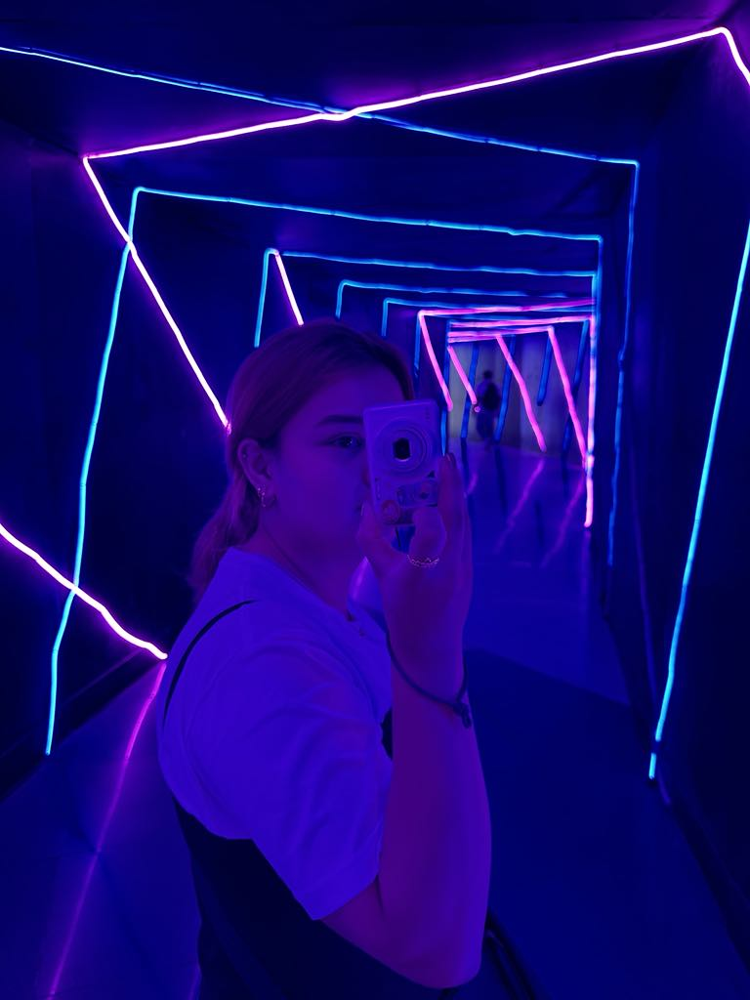

Company: SigniCADS
Position: Graphic Artist & Production
Duration: 5 years
Description: I have extensive experience in designing a wide variety of products, ranging from everyday items to customized, personalized creations tailored to meet the specific needs of our clients. Throughout this journey, I have worked diligently to ensure that every design is not only visually appealing but also of the highest quality. My attention to detail is paramount, as I strive to produce prints that are flawless and free from any issues, whether it’s on apparel, accessories, or other merchandise. By understanding the unique preferences of each client, I’m able to deliver products that not only meet but exceed expectations, creating lasting impressions and ensuring customer satisfaction. My commitment to excellence drives me to continually refine my skills and deliver outstanding results in every project.
Company: James L. Gordon Memorial Hospital
Position: Encoder & Photocopy
Duration: 1 Month
Description: I was responsible for encoding data into the database, ensuring that every entry was accurate and free of any misspellings or typos. Precision was crucial in this task, as even the smallest error could impact the integrity of the data. In addition to data entry, I also handled the photocopying of important documents required by our clients. Although I only performed these tasks for one month as it was a requirement for Practicum 1, I made sure to approach the work with the utmost care and attention to detail.
Photography has become one of my favorite hobbies, as I find joy in capturing moments and scenes that I find beautiful. Whether it's the serene landscapes, intricate details of nature, or fleeting moments of everyday life, I love to freeze these memories in time. Over the years, not only have I had the opportunity to take a variety of photos that reflect the beauty I see in the world around me, but this hobby has also honed my skills and made photography one of my true talents. I'm excited to share some of these captured moments with you.
At my core, I've always been an introverted person, preferring to observe and listen rather than be the center of attention. While I still identify as an introvert, I’m actively working on stepping out of my comfort zone each day, striving to make my presence known in a positive way. I want to be seen as approachable and open, someone who may not always be the first to speak, but who genuinely enjoys listening to others and understanding their perspectives. Although I may not be the most talkative, I find great value in connecting with people through thoughtful listening and meaningful interactions.


Hello! My name is Angelo Syrean Blanchard Bonifacio, and I'm passionate about becoming a skilled front-end developer. I believe that growth comes through continuous learning and experimentation, which is why I've created this website as my personal playground for coding. Here, you'll find my journey as I dive into various front-end technologies, testing ideas, exploring new techniques, and learning from both successes and mistakes. This platform is a reflection of my commitment to improving my skills and staying at the forefront of web development. Thank you for joining me on this exciting adventure!
I am currently a 3rd-year student at Gordon College - College of Computer Studies, pursuing a Bachelor of Science in Information Technology. At 20 years old, I'm at an exciting point in my academic journey, eager to learn and grow in the field of IT. While I may not be the most expressive person, I find strength in being a good listener, which allows me to understand and connect with others on a deeper level. Although I may not excel at everything, I am determined to be versatile and proficient in as many areas as possible. I believe in continuous improvement and am always looking for opportunities to expand my knowledge and skills. There's so much I want to share with the world, and I'm looking forward to the experiences and challenges that lie ahead.
Feel free to contact me at